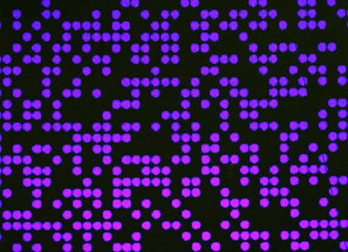
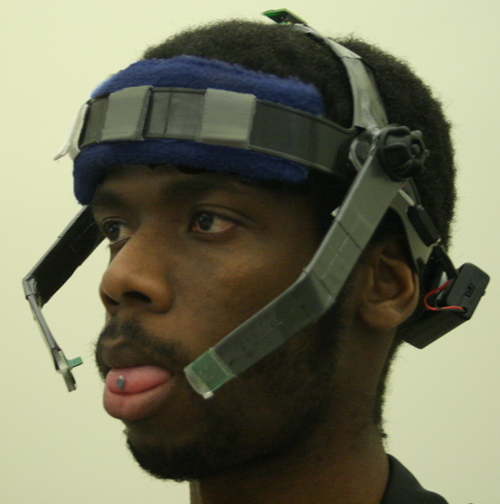
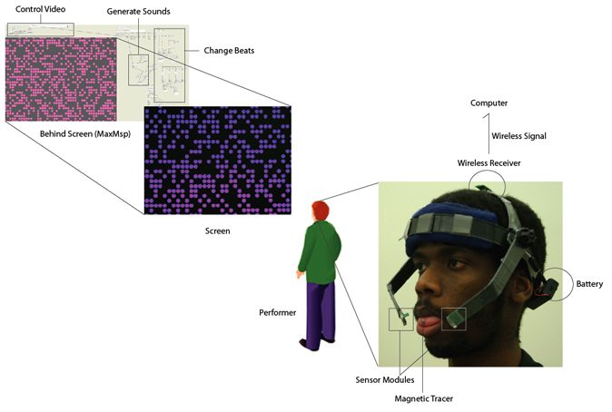

2009 Jan, Experimental Instrument, Collaboration with Ramaldo Martin
Detailed Picture
 
Documentation

The Tongue Music system consists of two components: a bio-computer interface and an audio/video production system.
The first component is a Tongue-Computer Interface (TCI), known as the Tongue Drive System (TDS). The headset possesses sensors that detect magnetic flux emanating from a small magnet secured on the tongue with tissue adhesive. These sensor readings are wirelessly transmitted to the computer. A signal processing algorithm converts the readings into mouse commands that are then employed by the audio/video production system.
The A/V system, designed in Max/MSP, uses the tongue-driven input for audio and video synthesis. In the case of the latter, the system utilizes the mouse position to non-linearly control the visual playback. By also mapping the mouse position to 128 distinct notes, the user can continuously - or occasionally - play music with the tongue or even add in extra background beats. Currently, there are three distinct quadruple-time background beats, which the user can change to that of a piano, bell, electric guitar or pipe organ.
Credit
Hye Yeon Nam:Experimental Instrument Concept and A/V design
Ramaldo Martin: Tongue-Computer Interface (TCI)
GT-Bionics Laboratory
GT-LCC/Digital Media